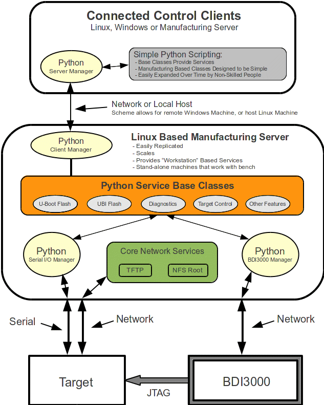

Small Scale Production Automation
Manufacturing needs vary for any company. For larger companies
producing large quantities, the problem is often resolved through the
use of organizations which specialize in high volume operations.
Smaller companies, or first runs of a product, often require
localized, engineering centric manufacturing fixtures which can be
utilized by floor personal who are not highly trained in engineering.
These fixtures are used to accomplish a variety of tasks, such as:
- Flashing soldered in devices such as eMMC or NAND/NOR Flash
with boot and/or production images.
- Handling and diagnosing product that fails regular
manufacturing quality assurance and testing.
- Performing diagnostic testing of new hardware, such as Power
On Self Tests, or Manufacturing Diagnostic Tests.
- Production configuration and deployment of small batches.
Figure 1 shows an example fixture which helps automate all of
these processes.

Figure 1 ‒ Manufacturing Test/Deployment Fixture
The type configuration shown in Figure 1 is designed to be
assembled by engineering staff, but simple enough to use by staff who
are not as highly trained. The key aspects of this test fixture are:
- A BDI-3000 JTAG Emulator is shown; although these are
currently end of life, they are still available from several
sources. This simple tool allows interaction with the host
processor via a JTAG interface, allowing many operations to be done,
such as programming of flash and running of diagnostics. And, there
are many alternatives to the BDI-3000 that may be better suited for
the processor in use.
- A core Python set of classes for not only controlling the
BDI-3000, but for interfacing with a UART based console on the
target. This set of classes provide primary sequencing and control
designed specifically for any operations which are required.
- The host test fixture is Linux based, and this provides
NFS/TFTP services for the target, such as a NFS Root Filesystem, as
well as allowing boot of a Linux Kernel from U-Boot on the Target.
- Connected Windows or Linux based clients to the host test
fixture are able to run extremely simple Python scripts which cause
various actions to happen, such as installing default images in
flash, or running diagnostics. These scripts are kept extremely
simply, as the complex work is done by the core Python classes on
the test fixture. Effectively, they can look like MS-DOS based
batch files, and floor personal can be easily trained to modify
and/or create simple control scripts.
Operational Flow
For the sake of discussion, two types of operational flow are
discussed: First boot installation, and failed board diagnostics
(RMA).
First Boot Installation
In this case, it is assumed that the target hardware comes from
the board house with blank flash. This is often the case with NAND
flash, which has specialized handling characteristics around it due
to bad block management. Other cases are where eMMC or NOR flash
does have a pre-programed image in it, but often is way out of date.
A typical flow would be:
- Connect to Manufacturing Fixture, power up.
- Execute a script on the client machine which as the simple
Python scripting, which invokes the more complex scripting on the
test fixture host to initiate flash programing through the BDI-3000.
Typically, this would simply install U-Boot or Diagnostics (or a
version of U-Boot which contains Diagnostics).
- After first installation, reboot and then run Diagnostics,
monitoring output and detecting pass/fail conditions. These
diagnostics could emit messages on the console, or in more advanced
settings (not shown in Figure 1), several LED's could show state,
and these LED's, controlled by GPIO's, could also be connected
to the Manufacturing Fixture; the GPIO's could be brought out on a stick
header, and connected to a parallel port on the test fixture,
allowing the core Python classes to monitor state.
- If the target passes Diagnostics, additional control
scripting could be used to cause U-Boot to load a Linux Kernel via
TFTP, mount a Root Filesystem NFS, and do final production flashing
and configuration using company specific upgrade/install logic.
Although this is a very simplified example, it does demonstrate
how using base Python classes on the Manufacturing Fixture allow connected
clients to cause complex operations with simple steps.
Failed Board Diagnostics
Typically for drop-out from manufacturing, or for customer RMA,
these operations are very similar to First Boot Installation: Simple
control scripts on the connected client to execute complex commands
via the Manufacturing Fixture, initiating a variety of diagnostics and
monitoring the results. Some examples:
- Run a full set of diagnostics from the BDI-3000; this allows
the diagnostics to run without any target firmware executing. Thus,
if the NAND/NOR has failed, diagnostics can be run on it. The same
applies for SDRAM.
- Run higher-level complex diagnostics, such as network tests.
- Initiate POST which reside in U-Boot.
- For high-speed network interfaces, it's often desired to
exercise low-level diagnostics at the PHY level, capturing data such
as Eye Diagrams. A Manufacturing Fixture of this nature can greatly automate
this process.
Summary
Every target configuration, and development house, will have
different needs. Yet, these simple approaches can easily simplify
day to day operations of designed in at engineering time. As targets
are brought-up and application code is developed, the Manufacturing Fixture
becomes and extension to the Development Engineering Team, and they
can create base Python control classes incrementally, classes which
are then easily sequenced by very simple Python scripting on
connected clients by technicians.